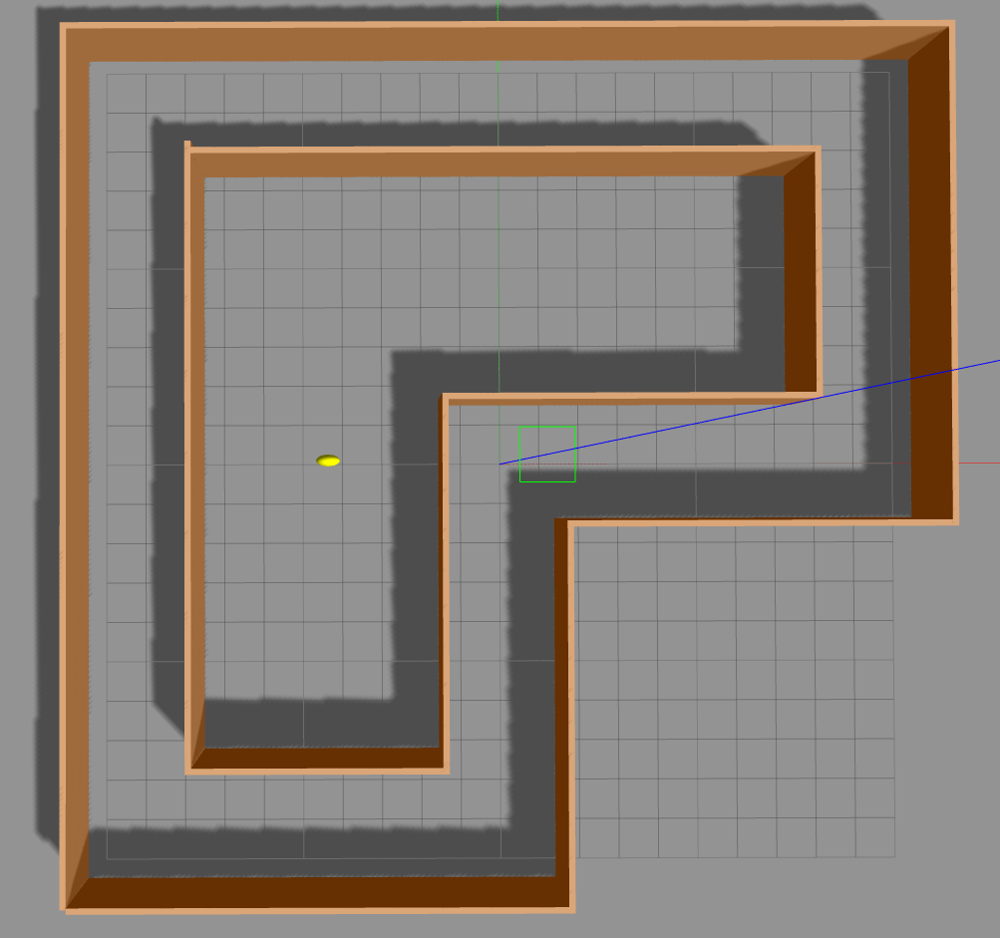
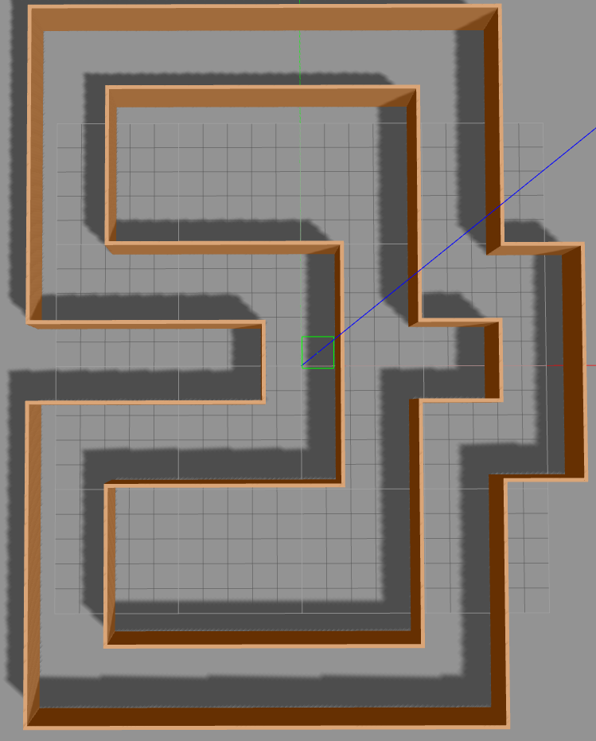
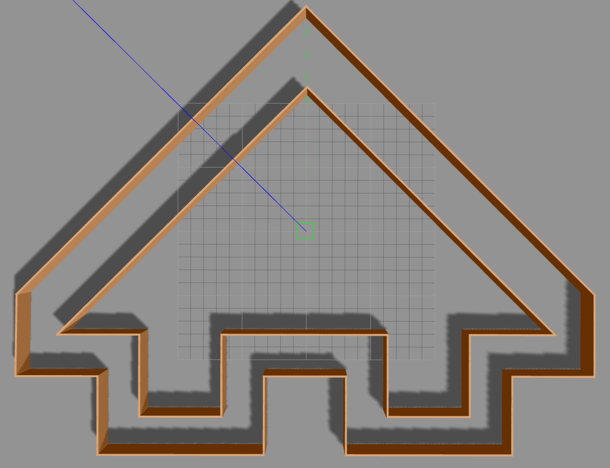

Reinforcement Learning for Autonomous Unmanned Aerial Vehicles - Undergraduate Thesis

Implementation of different reinforcement learning algorithms to solve the navigation problem of an unmanned aerial vehicle (UAV) using ROS / Gazebo and Python.
Description
navigation_env.py
: The goal of this environment is to navigate an UAV on a
track without crashing into the walls. Initially, the UAV is placed randomly
into the track but at a safe distance from the walls. The state space consists
of 5 range measurements. The action space consists of 3 actions (move_forward,
rotate_left, rotate_right). Furthermore, both actions and states have additive
white Gaussian noise. The UAV is rewarded +5 for moving forward and -0.5 for
rotating. If the UAV crashes into the wall it is penalized with -200.
There are 3 available worlds/tracks:
Track1:
Track2:
Track3:
Abstract
Reinforcement learning is an area of machine learning concerned with how autonomous agents learn to behave in unknown environments through trial-and-error. The goal of a reinforcement learning agent is to learn a sequential decision policy that maximizes the notion of cumulative reward through continuous interaction with the unknown environment. A challenging problem in robotics is the autonomous navigation of an Unmanned Aerial Vehicle (UAV) in worlds with no available map. This ability is critical in many applications, such as search and rescue operations or the mapping of geographical areas. In this thesis, we present a map-less approach for the autonomous, safe navigation of a UAV in unknown environments using reinforcement learning. Specifically, we implemented two popular algorithms, SARSA(λ) and Least-Squares Policy Iteration (LSPI), and combined them with tile coding, a parametric, linear approximation architecture for value function in order to deal with the 5- or 3-dimensional continuous state space defined by the measurements of the UAV distance sensors. The final policy of each algorithm, learned over only 500 episodes, was tested in unknown environments more complex than the one used for training in order to evaluate the behavior of each policy. Results show that SARSA(λ) was able to learn a near-optimal policy that performed adequately even in unknown situations, leading the UAV along paths free-of-collisions with obstacles. LSPI's policy required less learning time and its performance was promising, but not as effective, as it occasionally leads to collisions in unknown situations. The whole project was implemented using the Robot Operating System (ROS) framework and the Gazebo robot simulation environment.
Supervisor: Associate Professor Michail G. Lagoudakis
https://doi.org/10.26233/heallink.tuc.87066Getting Started
Prerequisites
This package is provided as a docker image.
Installation
Build the docker image:
docker build -t rl-uav .
Run the container:
docker run -it rl-uav
Due to XmlRpcServer querying all possible file descriptors, it may be required to lower the corresponding limit depending on your system:
docker run --ulimit nofile=1024:524288 -it rl-uav
Build the ros package:
cd /home/catkin_ws
catkin_make
Usage
In order to launch a new world you must start the
train.launch
file:
source /home/catkin_ws/devel/setup.bash
roslaunch rl_uav train.launch world:=track1 gui:=false
After the world has started, run the
train_uav
node (
train_uav.py
) to begin the training process and test different algorithms:
source /home/catkin_ws/devel/setup.bash
rosrun rl_uav train_uav.py
About
Status
Under maintenance.
License
Distributed under the GPL-3.0 License. See
LICENSE
for more information.